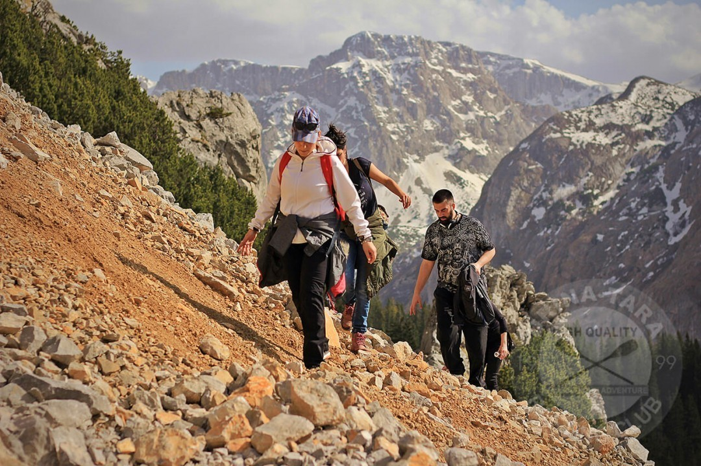
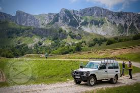
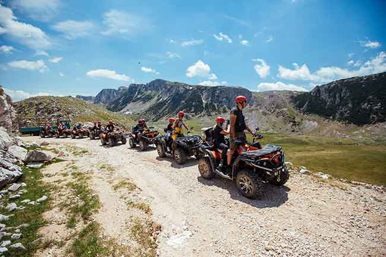
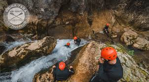

Svaki pedalj Nacionalnog parka Sutjeska predstavlja izuzetnu ljepotu kojom niko ko se upusti u šetnju i planinarenje ne ostaje ravnodušan. Ovaj rezervat prirode posetiocima koji se odluče za neku od hiking tura, koje su s razlogom najpopularniji vid aktivnog odmora uz rafting Tarom, nudi pogled na divlje vode, stijene, šume, lednička jezera, bogatu floru i faunu, te upoznavanje ovih krajeva kroz geografske i istorijske priče. Hiking, trekking, pješačenje, za šta god da se opredjelite, nudimo vam ture koje vode profesionalni vodiči. Izbor staza za pješačenje zaista je velik, a mjesta koja treba obići su planinska jezera Zelengore poznata i kao “gorske oči” kojih ima čak osam, prašuma Perućica, Tjentište, vodopad Skakavac, Trnovačko jezero, kanjon Sutjeske… Tu su i zahtjevnije hiking ture za spremnije šetače kao što su uspon na vrh Maglića koji je ujedno i najviši vrh u BiH i uspon na Durmitor (najviši planinski vrh u Crnoj Gori).
4X4 Jeep foto safari nudi pravo uživanje u prirodi, a terenskim vozilima vas vodimo u neizrecivo lijepu divljinu i prirodu na Zelengoru, desni obod kanjona Tare i u pohod na Durmitorski prsten. Vožnja džipovima offroad putevima preporučuje se svima onima avanturističkog duha. Ovo je prilika za one koji nisu spremni ili raspoloženi za dugo pešačenje da na uzbudljiv način otkriju nevjerovatne krajolike i predjele o kojima su do tada mogli samo da sanjaju.
ATV (all terrain vehicles) su, kako im ime kaže, vozila za sve terene. Imamo kapacitet da čak 25 gostiju Rafting Centra Drina-Tara istovremeno može iskusiti vožnju ATV kvadovima. Istražite okolinu ovim moćnim i snažnim XXL kvadovima, za dodatni adrenalin. Šta se može obići ovim četvorotočkašima? Predjeli na kanjnu Tare, odlazak do poznate farme sira Zeleni bor, cjelodnevna ekspedicija na planini Zelengori, Nacionalni park Sutjeska, planine Pliješ (1717mnv) i Vukuša (1414mnv)…
Kanjoning (Canyoning) je relativno novija aktivnost namjenjena posjetiocima koji su željni dodarnog, jakog adrenalina. Kanjoning obuhvata prolaženje kroz tjesnace i uske kanjone, pa čak i spuštanje niz litice uz pomoć kuka i kanapa, skakanje sa stjena u vodu, preplivavanje, ronjenje. Ovo je jedan ekstremniji ali i sveobuhvatniji način da se obiđu kanjoni Hrčavka i Nevidio u svoj svojoj ljepoti.
